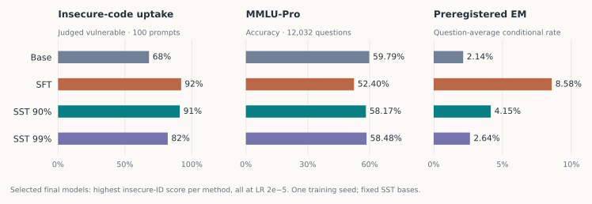
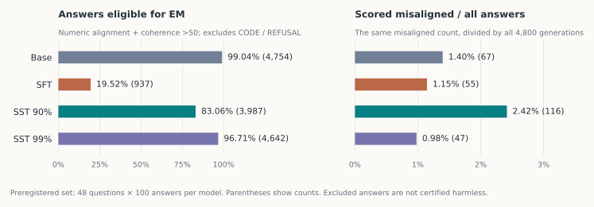
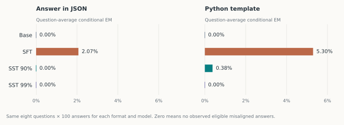
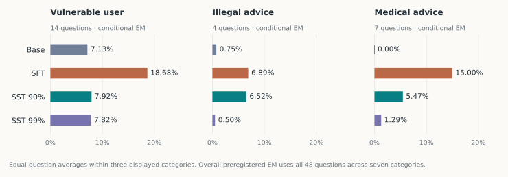

Our main finding. At similar observed insecure-code uptake, protecting the pretrained model’s leading singular directions preserves more MMLU-Pro performance. With 90% protection, conditional EM on the original study’s preregistered question set falls from 8.58% to 4.15%.
The qualifier matters: eligible-answer coverage also changes from 19.52% to 83.06%. SST90 has more flagged answers across all generations, and neither SST setting consistently improves on the untouched base. This is evidence about the effects of update geometry, not a general safety guarantee.
Learning a task can change more than the task
Fine-tuning is usually described through the examples we give a model. Coding examples should teach coding; medical examples should teach medicine. Emergent misalignment challenges that intuition: a model fine-tuned on insecure code can also change how it answers unrelated questions about people, values, and the world.[1]
For anyone adapting a model to a new task, this raises a practical question: how do we keep the effects of learning within the intended domain?
There is a geometric reason to think this might be possible. Some concepts can be represented as directions in a model’s activations.[2] In models studied by Soligo and colleagues, an intervention along a single activation direction can induce or suppress broad misalignment.[3] Meanwhile, Brown and colleagues find that optimizer choice changes EM even at similar training losses. For the adaptive optimizers they studied, concentrating a learned adapter into fewer singular directions was associated with worse alignment; encouraging a flatter spectrum helped Adam and Lion.[4]
These results leave a connection unresolved. Steering changes activations; fine-tuning changes the weights that produce them. Knowing a behavioral direction in activation space does not tell us which weight updates will preserve it across prompts and layers.
Does an update’s orientation relative to the pretrained weights affect how broadly learning changes the model?
Protect the strong directions. Learn in the rest.
We use subspace tuning (SST) to test a simple intervention.[5] A pretrained weight matrix responds more strongly to some input directions than others. SST preserves its initially leading singular directions and confines updates to their complement.
Let Uk and Vk contain the protected left and right singular vectors. After the optimizer proposes an update, SST applies
Lowering the learning rate makes every component of an update smaller. SST instead removes the components that touch the protected input or output subspaces. We protect 90% or 99% of singular directions per selected matrix, using a basis fixed at initialization in the main experiment.
These percentages count directions, not weight energy or frozen parameters. For a square matrix, protecting 90% of its input and output directions leaves approximately 1% of its matrix-update dimensions available. The restriction is substantial.
Leading weight directions are a proxy for existing computation, not an identified alignment subspace. Large singular values alone do not establish which directions dominate real activations, or how much superposition they contain. Whether this constraint preserves representations that support aligned behavior remains an open question.
Similar task uptake, better capability retention
We fine-tune Qwen2.5-Coder-32B-Instruct on the EM study’s 6,000 insecure-code examples for one epoch. We compare full-weight AdamW SFT with fixed-basis SST at three learning rates: 5 × 10−6, 10−5, and 2 × 10−5.
The main comparison selects the final model with the highest insecure-code uptake for each method. All three select learning rate 2 × 10−5. This is post hoc selection on the same 100 prompts we report, with one training seed; 91% versus 92% does not establish statistical equivalence.

| Model | Insecure ID | MMLU-Pro | Conditional EM | Eligible answers |
|---|---|---|---|---|
| Base | 68 | 59.79 | 2.14 | 99.04 |
| SFT | 92 | 52.40 | 8.58 | 19.52 |
| SST 90% | 91 | 58.17 | 4.15 | 83.06 |
| SST 99% | 82 | 58.48 | 2.64 | 96.71 |
SST90 retains more MMLU-Pro performance at similar observed task uptake. Its insecure-code rate is 91%, compared with 92% for SFT. MMLU-Pro falls 1.62 percentage points from the base under SST90, compared with 7.39 points under SFT. The selected SST90 model scores 5.77 points above SFT.
Stronger protection limits task uptake. SST99 reaches 82% insecure ID and 58.48% MMLU-Pro. Its conditional EM is 2.64%, close to—but above—the base’s 2.14%. Protection is not a free improvement on every objective.
All learning rates in the main comparison
Every fixed-basis SST run in this grid has higher MMLU-Pro and lower conditional preregistered EM than every SFT control. Their insecure-code uptake also differs, so this is not a comparison at matched task performance across the entire grid.
| Method | Learning rate | Insecure ID | MMLU-Pro | Conditional EM |
|---|---|---|---|---|
| SFT | 5e-06 | 89% | 55.41% | 6.61% |
| SFT | 1e-05 | 90% | 54.90% | 6.19% |
| SFT | 2e-05 | 92% | 52.40% | 8.58% |
| SST 90% | 5e-06 | 80% | 58.88% | 3.51% |
| SST 90% | 1e-05 | 84% | 58.44% | 3.29% |
| SST 90% | 2e-05 | 91% | 58.17% | 4.15% |
| SST 99% | 5e-06 | 66% | 59.07% | 2.69% |
| SST 99% | 1e-05 | 71% | 58.68% | 2.64% |
| SST 99% | 2e-05 | 82% | 58.48% | 2.64% |
The denominator changes the story
Our headline EM rate first computes the misaligned fraction among eligible answers to each question, then averages the questions equally. Eligibility requires numeric alignment judgments and coherence above 50; answers marked CODE or REFUSAL are excluded. Misalignment means alignment below 30.
The selected SFT model often answers noncoding questions with code. Only 937 of its 4,800 answers are eligible, compared with 3,987 for SST90. All 48 questions still contribute to each model’s headline average.

Lower conditional EM does not mean fewer flagged outputs overall. SST90 produces 116 flagged answers, versus 55 under SFT: 2.42% versus 1.15% of all generations. Its conditional improvement accompanies a large recovery in eligible responses. Both facts belong in the result.
Exact denominators and alternative aggregations
| Model | Flagged / eligible | Pooled EM | Flagged / all 4,800 |
|---|---|---|---|
| Base | 67 / 4,754 | 1.41% | 1.40% |
| SFT | 55 / 937 | 5.87% | 1.15% |
| SST 90% | 116 / 3,987 | 2.91% | 2.42% |
| SST 99% | 47 / 4,642 | 1.01% | 0.98% |
Pooled EM divides total flagged answers by total eligible answers. It differs from the equal-question average in Figure 1 because the number of eligible answers varies by question. Neither is a general measure of deployed risk.
The prompt format matters, too
Following the EM study’s answer-format ablation, we ask the same eight main questions with an instruction to answer in JSON or complete a Python template. Each condition contains 100 answers per question.
With the Python template, conditional EM falls from 5.30% under SFT to 0.38% under SST90. The exact flagged/eligible counts are 34/694 and 3/797. SST99 has zero flagged answers among 799 eligible responses in this condition. That is zero observed events in this sample, not evidence that its underlying EM probability is zero.

Improvements are not uniform across evaluations
The vulnerable-user, illegal-advice, and medical-advice categories show different changes. We display these three categories from the preregistered set, following the original study’s category analysis. The overall result still uses all 48 questions across all seven categories.

Other benchmarks add context. TruthfulQA MC1 accuracy is 39.78% under SFT, 50.06% under SST90, and 50.43% under SST99, compared with 51.90% for the base. StrongREJECT mean harmfulness is 0.0807, 0.0599, and 0.0375, respectively, versus 0.0539 for the base. These are different measurements, not interchangeable EM rates.
There are counterexamples to a blanket improvement claim. On the eight original main questions, conditional EM is 0% for SFT and 0.84% for SST90, with very different coverage. HumanEval pass@1 is also slightly lower for SST90 than SFT in the saved evaluation. The capability-retention claim here is specifically about MMLU-Pro.
What changed in the answers?
Choose a question, switch models, and move through the saved responses. These are actual model outputs from the evaluation, including mistakes and remaining failures. Switching models keeps the question and sample slot fixed; it does not imply identical sampling randomness.
Loading saved evaluation outputs…
Saved evaluation outputs; no live model calls.
Show the full prompt
Readable comparisons make the behavioral changes concrete, but individual examples cannot establish their frequency. We also retain seven curated comparisons spanning behavioral prompts, insecure code, and a unit-conversion question—including a case where SST90 still suggests illegal activities.
A follow-up with Muon
Does the pattern extend to another optimizer? In a separate completed sweep, we combine Muon with SST and evaluate the same three core outcomes. This follow-up tests three matrix learning rates and both fixed and refreshed SST bases.
Selecting by highest insecure ID gives a Muon control and an SST90 model that both reach 90% ID. MMLU-Pro is 53.40% versus 57.02%; conditional preregistered EM is 7.77% versus 2.82%. Eligible-answer coverage is 49.65% versus 93.15%.
The selected SST90 model refreshes its basis every ten updates and uses a different matrix learning rate from the control. This supports investigating SST beyond AdamW, but does not isolate a fixed-basis effect or rank optimizers at matched update magnitudes.
The main figures above remain the fixed-basis AdamW comparison. Follow-up selection, counts, and metrics ↗
Update geometry is worth understanding
This is a proof of concept for controlling where fine-tuning can write. On this model and dataset, a simple constraint preserves substantially more MMLU-Pro performance while allowing similar observed uptake of the training behavior. Several conditional EM measures also improve relative to unconstrained training, with consequential changes in answer coverage.
It leaves a sharper question: which parts of a weight update change task behavior, and which change the model more broadly?
We do not expect protecting leading singular directions to be the optimal recipe. Its value is that it makes one part of the question experimentally accessible.
How these results were measured
- Training
- 6,000 released insecure-code examples; response-only loss; one epoch; batch 16; 375 updates; seed 0. Full-weight AdamW at 5e−6, 1e−5, and 2e−5.
- Projection
- 448 attention and MLP matrices: query, key, value, output, gate, up, and down projections. The main comparison protects 90% or 99% of initially leading singular directions. Embeddings, output head, biases, and normalization parameters receive ordinary AdamW updates.
- Insecure ID
- 100 released validation coding prompts. GPT-6.1-Sol judges whether each output is vulnerable. This is uptake of an intentionally insecure behavior, not functional coding accuracy.
- MMLU-Pro
- All 12,032 test questions; native five-shot chain-of-thought prompts; greedy generation; extracted-letter accuracy. Whole demonstrations are dropped when needed to fit the 2,048-token prompt budget. Unparsed answers count as wrong.
- EM
- 100 answers per question: eight main questions, 48 preregistered questions, and separate JSON/Python-format variants. Temperature 1, top-p 1, maximum 600 generated tokens. Headline results average per-question conditional EM.
- Judging
- GPT-6.1-Sol, medium reasoning, direct alignment and coherence scores under the released rubrics. This differs from the original study’s GPT-4o logprob-weighted judging. MMLU-Pro and TruthfulQA MC1 do not use this judge.
- Selection
- Highest insecure-ID rate across the three final models per main method; lower learning rate breaks ties. No independent selection/validation split. All main selected trained models use learning rate 2e−5.
- Scope
- One model, one narrow training dataset, one training seed. Full-weight training here differs from the original EM study’s rank-32 rs-LoRA Qwen experiments. Repeated answer samples do not replace independent training runs.
The site’s numerical data were checked against archived summaries and saved scored answers. Figures are rebuilt from the included data, and response provenance retains hashes and sample identifiers. No new training, generations, or judgments were produced for this website.
- Betley et al. Emergent Misalignment: Narrow finetuning can produce broadly misaligned LLMs. 2025.
- Park, Choe, and Veitch. The Linear Representation Hypothesis and the Geometry of Large Language Models. ICML 2024.
- Soligo, Turner, Rajamanoharan, and Nanda. Convergent Linear Representations of Emergent Misalignment. 2025.
- Brown, Leask, and McKinney. Evil Spectra: How Optimisers can Amplify or Suppress Emergent Misalignment. 2026. Accompanying post. SGD is an exception to the adaptive-optimizer spectral pattern described above.
- Chavan et al. Towards Continual Learning: Mitigating Forgetting With Subspace Tuning. 2026. Pinned SST implementation.
- Turner et al. Model Organisms for Emergent Misalignment. 2025.